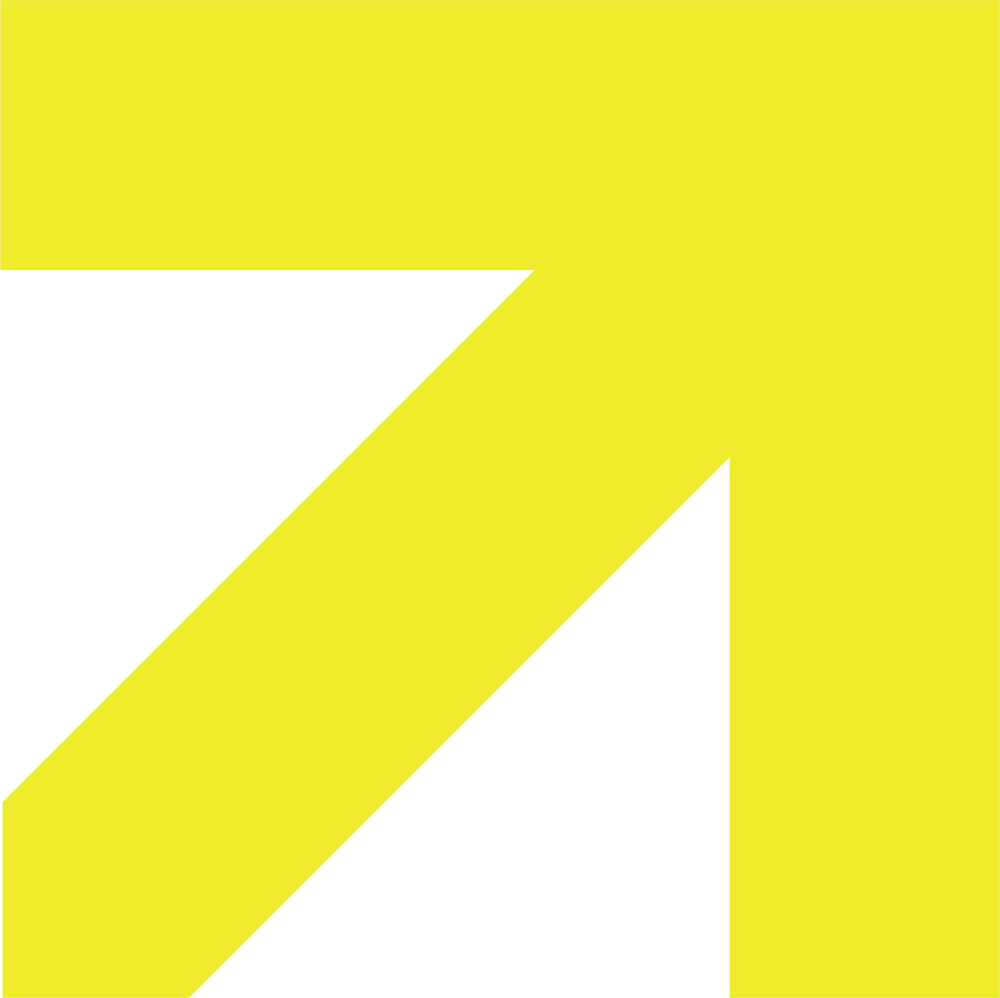

9:30–13:00 Morning session: Ignite talks & collective mappingJoin us for a day of exchanges about digital sovereignty, access to reliable data, resilient digital infrastructure, and safeguarding cultural heritage at risk.
Reclaim the Open explores openness as a core Nordic–Baltic value, bringing together people working across culture, research, media, technology, and public policy. Together, we will explore knowledge and culture as critical infrastructure in times of geopolitical and technological disruption, map ongoing initiatives, and spark lasting collaboration across the Nordics and Baltic.
OK North is a Nordic–Baltic network connecting people and organizations working with open knowledge, digital commons and public policy: Open Knowledge Finland, Sweden, and Estonia, Creative Commons Finland, Sweden, and Norway, and OpenDenmark. It is supported by the Nordic Council of Ministers.